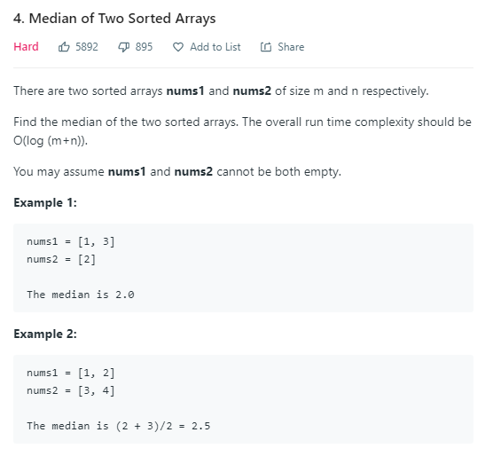
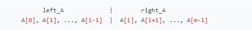
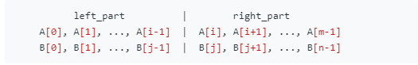
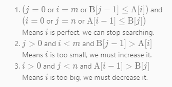

4.Median of Two Sorted Arrays
2020-02-13 / ClownW
4.Leetcode Top Interview Questions

题目要求找到两个已经排好序的数组的中位数，并且时间限制在$O(log(m+n))$。
首先明确中位数的定义：将一个数组分成等长的两部分，其中左边最大的元素小于右边最小的元素。
这里有两个数组A,B。不妨对A做切分，由于要求两边等长，B的切分位置也可以推出来。令A为两个数组中更短的那个。


需要保证两点：
- len(left_part) = len(right_part)
- max(left_part) <= min(right_part)
若找到某个i满足上述条件，则找到了完美切分，则
$meidan = (max(left_part)+min(right_part))/2$
为了满足上面两个条件，必须保证
- i + j = (m-i) + (n-j) (或 (m-i) + (n-j) + 1)，由于j取整数，因此 j = (m+n+1)/2 - i
- B[j-1] <= A[i] 且 A[i-1] <= B[j]
这里是假设A[i-1]，B[j-1]，A[i]，B[j]全都存在的情况下，当i=0,i=m,j=0或j=n时，这些值可能不存在。
为什么要令A为更短的那个？
因为 j = (m+n+1)/2 - i，若A为更长的那个，则j可能会出现负数。
按照下面的步骤来进行二分查找：
- 设imin = 0, imax = m, 在[imin, imax]之中开始搜索
- 设i = (imin+imax)/2, j = (m+n+1)/2 - i
- 由以上两步满足了len(left_part) = len(right_part)，并且最终可能有三种情况。
- B[j-1]<=A[i]且A[i-1]<B[j]，说明已经找到了正确的i，停止搜索
- B[j-1]>A[i]，说明A[i]太小了，需要增加i，因此将搜索范围调整到[i+1, imax]
- A[i-1]>B[j]，说明A[i-1]太大了，需要减小i，因此将搜索范围调整为[imin, i-1]
当找到了i时，
- 若m+n为奇数，则中位数为max(A[i-1], B[j-1])
- 若m+n为偶数，则中位数为(max(A[i-1], B[j-1])+min(A[i], B[j]))/2
在边界情况时只需要考虑一种，即B[j-1]<=A[i]或A[i-1]<B[j]。
因此综合起来的三种情况：

代码：
1 | def median(A, B): |
本文链接：http://clownw.github.io/Leetcode-3/